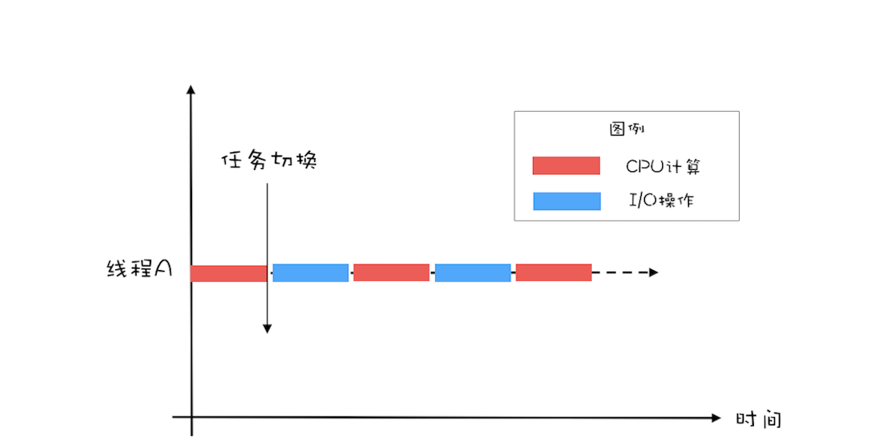
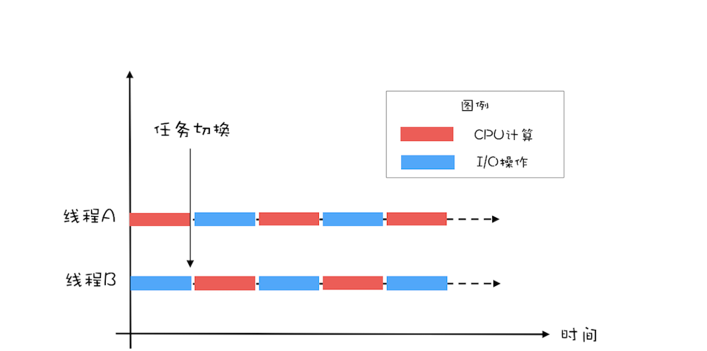
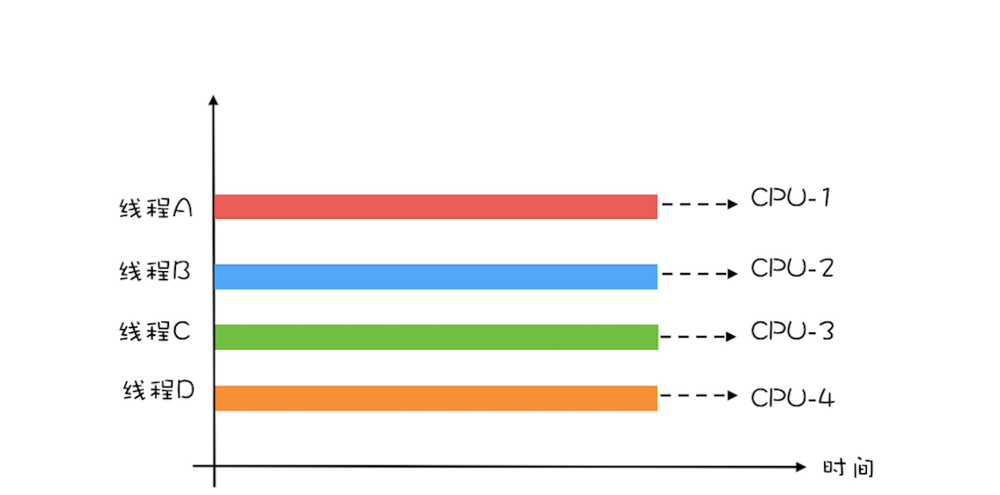
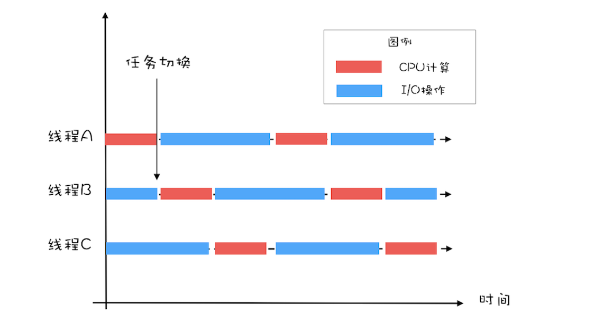

- 00 学习攻略 如何才能学好并发编程？.md
- 00 开篇词 你为什么需要学习并发编程？.md
- 01 可见性、原子性和有序性问题：并发编程Bug的源头.md
- 02 Java内存模型：看Java如何解决可见性和有序性问题.md
- 03 互斥锁（上）：解决原子性问题.md
- 04 互斥锁（下）：如何用一把锁保护多个资源？.md
- 05 一不小心就死锁了，怎么办？.md
- 06 用“等待-通知”机制优化循环等待.md
- 07 安全性、活跃性以及性能问题.md
- 08 管程：并发编程的万能钥匙.md
- 09 Java线程（上）：Java线程的生命周期.md
- 10 Java线程（中）：创建多少线程才是合适的？.md
- 11 Java线程（下）：为什么局部变量是线程安全的？.md
- 12 如何用面向对象思想写好并发程序？.md
- 13 理论基础模块热点问题答疑.md
- 14 Lock和Condition（上）：隐藏在并发包中的管程.md
- 15 Lock和Condition（下）：Dubbo如何用管程实现异步转同步？.md
- 16 Semaphore：如何快速实现一个限流器？.md
- 17 ReadWriteLock：如何快速实现一个完备的缓存？.md
- 18 StampedLock：有没有比读写锁更快的锁？.md
- 19 CountDownLatch和CyclicBarrier：如何让多线程步调一致？.md
- 20 并发容器：都有哪些“坑”需要我们填？.md
- 21 原子类：无锁工具类的典范.md
- 22 Executor与线程池：如何创建正确的线程池？.md
- 23 Future：如何用多线程实现最优的“烧水泡茶”程序？.md
- 24 CompletableFuture：异步编程没那么难.md
- 25 CompletionService：如何批量执行异步任务？.md
- 26 Fork_Join：单机版的MapReduce.md
- 27 并发工具类模块热点问题答疑.md
- 28 Immutability模式：如何利用不变性解决并发问题？.md
- 29 Copy-on-Write模式：不是延时策略的COW.md
- 3 个用户来信 打开一个新的并发世界.md
- 30 线程本地存储模式：没有共享，就没有伤害.md
- 31 Guarded Suspension模式：等待唤醒机制的规范实现.md
- 32 Balking模式：再谈线程安全的单例模式.md
- 33 Thread-Per-Message模式：最简单实用的分工方法.md
- 34 Worker Thread模式：如何避免重复创建线程？.md
- 35 两阶段终止模式：如何优雅地终止线程？.md
- 36 生产者-消费者模式：用流水线思想提高效率.md
- 37 设计模式模块热点问题答疑.md
- 38 案例分析（一）：高性能限流器Guava RateLimiter.md
- 39 案例分析（二）：高性能网络应用框架Netty.md
- 40 案例分析（三）：高性能队列Disruptor.md
- 41 案例分析（四）：高性能数据库连接池HiKariCP.md
- 42 Actor模型：面向对象原生的并发模型.md
- 43 软件事务内存：借鉴数据库的并发经验.md
- 44 协程：更轻量级的线程.md
- 45 CSP模型：Golang的主力队员.md
- 用户来信 真好，面试考到这些并发编程，我都答对了！.md
- 结束语 十年之后，初心依旧.md
10 Java线程（中）：创建多少线程才是合适的？
在Java领域，实现并发程序的主要手段就是多线程，使用多线程还是比较简单的，但是使用多少个线程却是个困难的问题。工作中，经常有人问，“各种线程池的线程数量调整成多少是合适的？”或者“Tomcat的线程数、Jdbc连接池的连接数是多少？”等等。那我们应该如何设置合适的线程数呢？
要解决这个问题，首先要分析以下两个问题：
- 为什么要使用多线程？
- 多线程的应用场景有哪些？
为什么要使用多线程？
使用多线程，本质上就是提升程序性能。不过此刻谈到的性能，可能在你脑海里还是比较笼统的，基本上就是快、快、快，这种无法度量的感性认识很不科学，所以在提升性能之前，首要问题是：如何度量性能。
度量性能的指标有很多，但是有两个指标是最核心的，它们就是延迟和吞吐量。延迟指的是发出请求到收到响应这个过程的时间；延迟越短，意味着程序执行得越快，性能也就越好。 吞吐量指的是在单位时间内能处理请求的数量；吞吐量越大，意味着程序能处理的请求越多，性能也就越好。这两个指标内部有一定的联系（同等条件下，延迟越短，吞吐量越大），但是由于它们隶属不同的维度（一个是时间维度，一个是空间维度），并不能互相转换。
我们所谓提升性能，从度量的角度，主要是降低延迟，提高吞吐量。这也是我们使用多线程的主要目的。那我们该怎么降低延迟，提高吞吐量呢？这个就要从多线程的应用场景说起了。
多线程的应用场景
要想“降低延迟，提高吞吐量”，对应的方法呢，基本上有两个方向，一个方向是优化算法，另一个方向是将硬件的性能发挥到极致。前者属于算法范畴，后者则是和并发编程息息相关了。那计算机主要有哪些硬件呢？主要是两类：一个是I/O，一个是CPU。简言之，在并发编程领域，提升性能本质上就是提升硬件的利用率，再具体点来说，就是提升I/O的利用率和CPU的利用率。
估计这个时候你会有个疑问，操作系统不是已经解决了硬件的利用率问题了吗？的确是这样，例如操作系统已经解决了磁盘和网卡的利用率问题，利用中断机制还能避免CPU轮询I/O状态，也提升了CPU的利用率。但是操作系统解决硬件利用率问题的对象往往是单一的硬件设备，而我们的并发程序，往往需要CPU和I/O设备相互配合工作，也就是说，我们需要解决CPU和I/O设备综合利用率的问题。关于这个综合利用率的问题，操作系统虽然没有办法完美解决，但是却给我们提供了方案，那就是：多线程。
下面我们用一个简单的示例来说明：如何利用多线程来提升CPU和I/O设备的利用率？假设程序按照CPU计算和I/O操作交叉执行的方式运行，而且CPU计算和I/O操作的耗时是1:1。
如下图所示，如果只有一个线程，执行CPU计算的时候，I/O设备空闲；执行I/O操作的时候，CPU空闲，所以CPU的利用率和I/O设备的利用率都是50%。

单线程执行示意图
如果有两个线程，如下图所示，当线程A执行CPU计算的时候，线程B执行I/O操作；当线程A执行I/O操作的时候，线程B执行CPU计算，这样CPU的利用率和I/O设备的利用率就都达到了100%。

二线程执行示意图
我们将CPU的利用率和I/O设备的利用率都提升到了100%，会对性能产生了哪些影响呢？通过上面的图示，很容易看出：单位时间处理的请求数量翻了一番，也就是说吞吐量提高了1倍。此时可以逆向思维一下，如果CPU和I/O设备的利用率都很低，那么可以尝试通过增加线程来提高吞吐量。
在单核时代，多线程主要就是用来平衡CPU和I/O设备的。如果程序只有CPU计算，而没有I/O操作的话，多线程不但不会提升性能，还会使性能变得更差，原因是增加了线程切换的成本。但是在多核时代，这种纯计算型的程序也可以利用多线程来提升性能。为什么呢？因为利用多核可以降低响应时间。
为便于你理解，这里我举个简单的例子说明一下：计算1+2+… … +100亿的值，如果在4核的CPU上利用4个线程执行，线程A计算[1，25亿)，线程B计算[25亿，50亿)，线程C计算[50，75亿)，线程D计算[75亿，100亿]，之后汇总，那么理论上应该比一个线程计算[1，100亿]快将近4倍，响应时间能够降到25%。一个线程，对于4核的CPU，CPU的利用率只有25%，而4个线程，则能够将CPU的利用率提高到100%。

多核执行多线程示意图
创建多少线程合适？
创建多少线程合适，要看多线程具体的应用场景。我们的程序一般都是CPU计算和I/O操作交叉执行的，由于I/O设备的速度相对于CPU来说都很慢，所以大部分情况下，I/O操作执行的时间相对于CPU计算来说都非常长，这种场景我们一般都称为I/O密集型计算；和I/O密集型计算相对的就是CPU密集型计算了，CPU密集型计算大部分场景下都是纯CPU计算。I/O密集型程序和CPU密集型程序，计算最佳线程数的方法是不同的。
下面我们对这两个场景分别说明。
对于CPU密集型计算，多线程本质上是提升多核CPU的利用率，所以对于一个4核的CPU，每个核一个线程，理论上创建4个线程就可以了，再多创建线程也只是增加线程切换的成本。所以，对于CPU密集型的计算场景，理论上“线程的数量=CPU核数”就是最合适的。不过在工程上，线程的数量一般会设置为“CPU核数+1”，这样的话，当线程因为偶尔的内存页失效或其他原因导致阻塞时，这个额外的线程可以顶上，从而保证CPU的利用率。
对于I/O密集型的计算场景，比如前面我们的例子中，如果CPU计算和I/O操作的耗时是1:1，那么2个线程是最合适的。如果CPU计算和I/O操作的耗时是1:2，那多少个线程合适呢？是3个线程，如下图所示：CPU在A、B、C三个线程之间切换，对于线程A，当CPU从B、C切换回来时，线程A正好执行完I/O操作。这样CPU和I/O设备的利用率都达到了100%。

三线程执行示意图
通过上面这个例子，我们会发现，对于I/O密集型计算场景，最佳的线程数是与程序中CPU计算和I/O操作的耗时比相关的，我们可以总结出这样一个公式：
最佳线程数=1 +（I/O耗时 / CPU耗时）
我们令R=I/O耗时 / CPU耗时，综合上图，可以这样理解：当线程A执行IO操作时，另外R个线程正好执行完各自的CPU计算。这样CPU的利用率就达到了100%。
不过上面这个公式是针对单核CPU的，至于多核CPU，也很简单，只需要等比扩大就可以了，计算公式如下：
最佳线程数=CPU核数 * [ 1 +（I/O耗时 / CPU耗时）]
总结
很多人都知道线程数不是越多越好，但是设置多少是合适的，却又拿不定主意。其实只要把握住一条原则就可以了，这条原则就是将硬件的性能发挥到极致。上面我们针对CPU密集型和I/O密集型计算场景都给出了理论上的最佳公式，这些公式背后的目标其实就是将硬件的性能发挥到极致。
对于I/O密集型计算场景，I/O耗时和CPU耗时的比值是一个关键参数，不幸的是这个参数是未知的，而且是动态变化的，所以工程上，我们要估算这个参数，然后做各种不同场景下的压测来验证我们的估计。不过工程上，原则还是将硬件的性能发挥到极致，所以压测时，我们需要重点关注CPU、I/O设备的利用率和性能指标（响应时间、吞吐量）之间的关系。
课后思考
有些同学对于最佳线程数的设置积累了一些经验值，认为对于I/O密集型应用，最佳线程数应该为：2 * CPU的核数 + 1，你觉得这个经验值合理吗？
欢迎在留言区与我分享你的想法，也欢迎你在留言区记录你的思考过程。感谢阅读，如果你觉得这篇文章对你有帮助的话，也欢迎把它分享给更多的朋友。
© 2019 - 2023 Liangliang Lee. Powered by gin and hexo-theme-book.